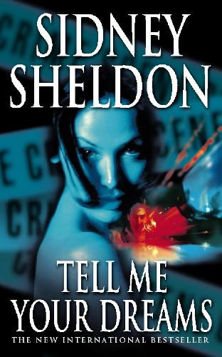
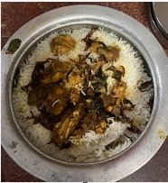
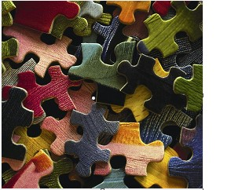
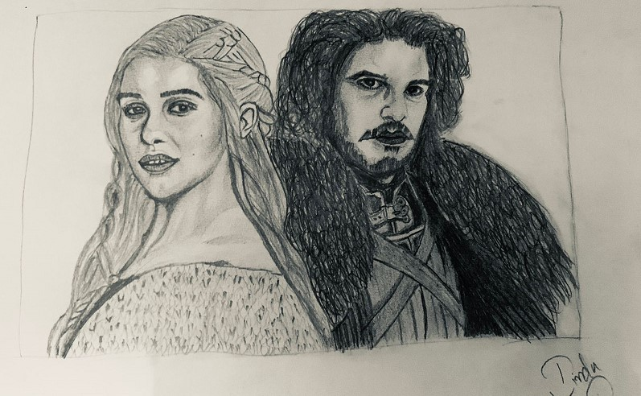
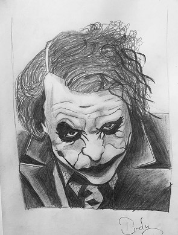

Above is me and below are my hobbies. Another tab 'serial killers' highlights my subject of interest. I love watching true crime documentaries and interviews.Human psychology interests me.
I love reading books because particularly Mystery and Thrillers novels.It is quite intriguing to wander in mystery worlds. Authors like sydney sheldon write engage books which will keep you hooked till the last.
If you ask me, cooking is an artform.It requires lots of patience to make food. We can try various cultures and learn about traditions from all over the world by understanding that place's taste palette. I make amazing Biryani which is one of the most famous regional foods in India, the place I hail from.
Puzzles are the best pastime ever. Solving puzzles, be it jigsaw or logical, will sharpen your skills and make you think more. If they are mystery puzzles like in escape rooms, they are amazing group activities for team building too. I have over a dozen jigsaw puzzles and I solve them whenever I feel unfocused.
Pencil Sketching is one other activity which helps you relax your mind and teaches you to work hard patiently for great results. What more? you could sketch your favourite artists and decorate your roomt too!! Below are few of my sketches:
 